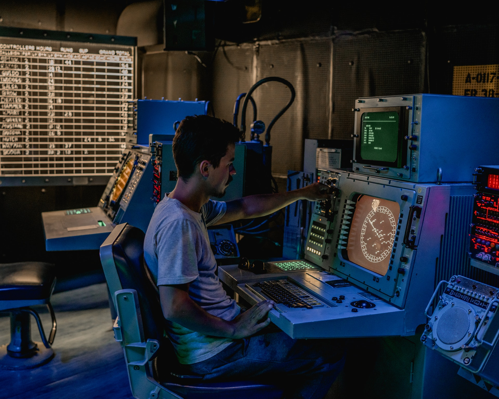
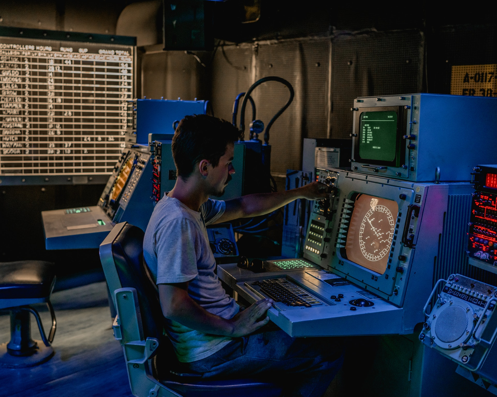
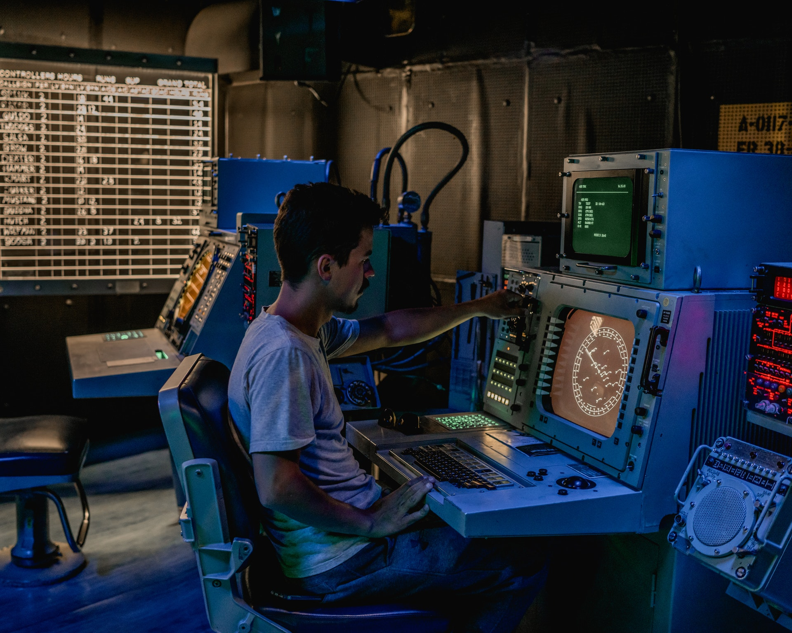

JUBIN MOHANTY

JUBIN MOHANTY

I graduated with a Master's in Data Analytics, with a concentration in Machine Learning from Northeastern University, and an undergrad in applied electronics and instrumentation with a Concentration in Digital Image Processing.
I have more than 3.5 years of experience. The industries where I was involved are manufacturing, healthcare, robotics, aerospace, and the environment.
Currently, I am working at Airbus as a Machine Learning Developer. I also work part-time for a non-profit organization, Greenstand, as a Data Scientist, which has a global initiative to address climate change by tree plantation & technology. Prior to that, I worked as a Data Engineer with Humatics, a Robotics firm in Boston. Also, I did an internship project with EBTC/John Hopkins Bloomberg School of Public Health while I was in Northeastern University, where my primary goal was to develop a predictive model.
A representation of my proficiency in each skill
Used in Developing Data Pipelines, ML Pipeline, Backend and in Data Analysis
Used in Developing Data Pipelines, ML Pipeline, Backend and in Data Analysis
Used in Developing Data Pipelines, ML Pipeline, Backend and in Data Analysis
Used in Developing Data Pipelines, ML Pipeline, Backend and in Data Analysis
Used in Developing Data Pipelines, ML Pipeline, Backend and in Data Analysis
Below are some of my skills, and I'm always looking to learn more.
(Somewhat outdated, will update soon. Grad student life is very busy!)
I have significant research experience in the field of computer vision, including Computer Vision Tools for Locating Nitrogren-Vacancy Centers. I've also created dozens of programs using libraries such as OpenCV and OpenGL – these include my object tracker, collage generator, game engine, ray casting simulation, and many more.